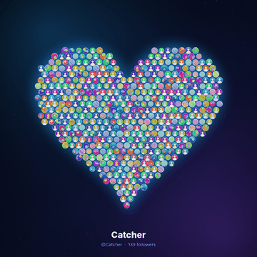
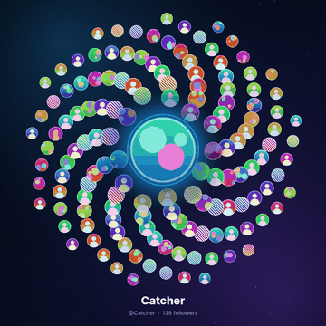
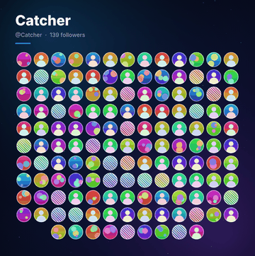
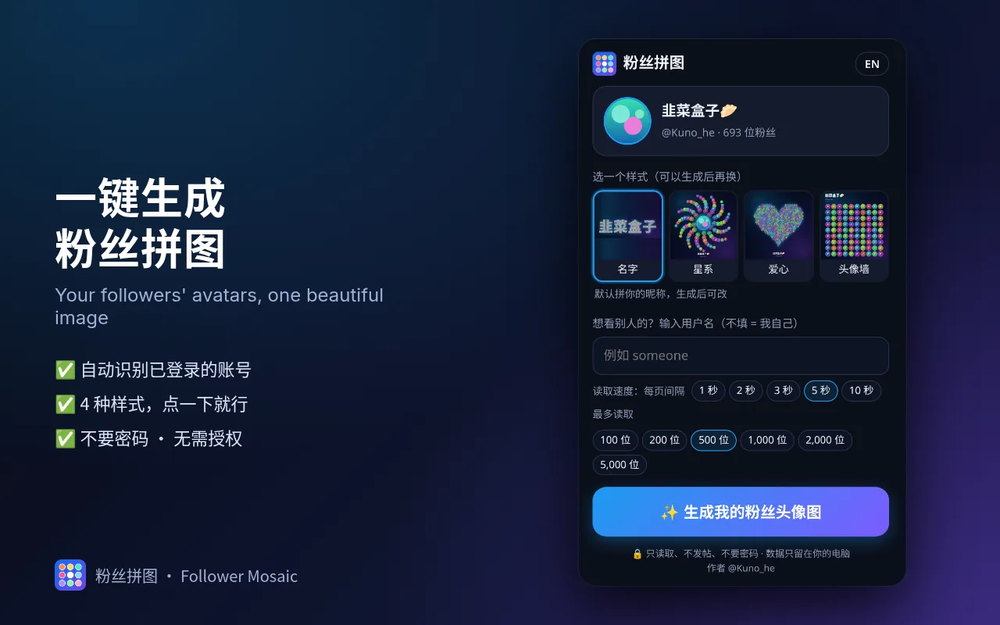
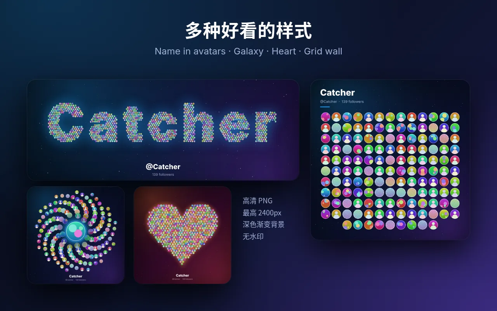
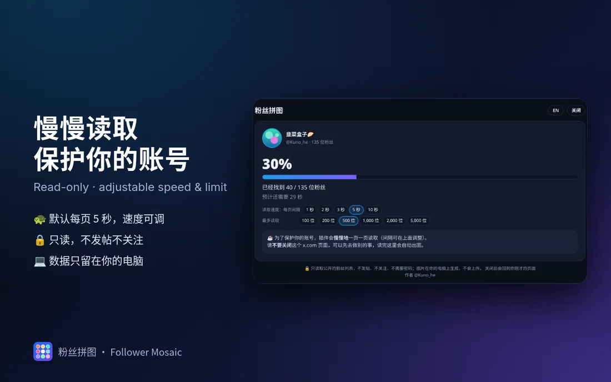

把你的 X 粉丝头像
拼成一张图
粉丝拼图会读取你的 X 粉丝头像，把它们拼成你的名字、一颗爱心、一个星系或一面头像墙，一键下载高清 PNG，发帖感谢粉丝正合适。
已上架 Chrome 应用商店，点「免费获取」直接安装




简单、安全、好看
不用注册，不用授权，装好就能用。
无需登录或授权
不要密码、不要 OAuth、不要 API Key。直接沿用你在 x.com 上已有的登录状态，账号更安全。
完全在本地运行
读取、拼图、导出都在你自己的浏览器里完成，没有服务器。
不上传任何数据
没有统计、广告和追踪，也不会发帖、关注或私信。所有请求都只读。
粉丝数和速度可调
最多读取 100 到 5000 位粉丝（默认 500），每页间隔 1 到 10 秒（默认 5 秒），读得越慢越稳。
自定义文字和字体
默认拼你的昵称，也可以改成任何文字，支持中文和多种字体、配色。
高清无水印
最高 2400 px 的 PNG，深色渐变背景，没有水印，下载就能发。
下载安装
已上架 Chrome 应用商店，Edge、Brave 等 Chromium 内核浏览器（电脑版）也能从商店安装。
安装包手动安装 v1.0.0
打不开应用商店时，可以下载安装包手动加载：
- 下载 zip 并解压到一个固定的文件夹（之后别删）。
- 在地址栏打开
chrome://extensions。 - 打开右上角的开发者模式。
- 点加载已解压的扩展程序，选中刚才解压出的文件夹（里面有
manifest.json）。 - 点浏览器右上角的拼图图标，把「粉丝拼图」固定到工具栏。
怎么用
五步搞定，不需要任何电脑基础。
- 在 Chrome 里打开 x.com 并登录你的账号。
- 点工具栏上的粉丝拼图图标，页面上会弹出面板。
- 选一个样式：名字、星系、爱心或头像墙。想拼别的文字、换字体也在这里改。
- 等它读完。面板会显示进度，粉丝多就多等一会儿，期间别关掉面板。
- 点下载图片，得到一张高清 PNG。



常见问题
安全吗？会不会封号？
插件不要密码、不要授权，也不会替你发帖、关注、点赞或私信，只做和你自己翻粉丝列表一样的只读操作，而且默认每 5 秒才读一页，频率很低。数据不离开你的浏览器，代码完全开源，可以在 GitHub 上查看。
为什么一开始很慢，一直停在 0%？
插件会先打开你的粉丝页，等 X 自己发出第一次粉丝列表请求，再接着往下读，所以第一页通常要多等几秒到十几秒，这是正常的。之后每页按你设置的间隔读取，大约 20 位一页。
关掉面板还会继续读取吗？
不会。关掉面板（或关闭、刷新这个 x.com 标签页）就会停止读取，已读到的数据也会丢弃，下次需要重新开始。读取时请保持面板打开。
为什么读到的人数比粉丝数少？
X 显示的粉丝数里包含已封禁、受保护或已停用的账号，这些不会出现在列表里，所以读完时人数可能比显示的少一些。
能看别人的粉丝吗？
插件读取的是你在 x.com 上能看到的公开粉丝列表，主要用于给自己的账号做感谢图。请尊重他人隐私，合理使用。